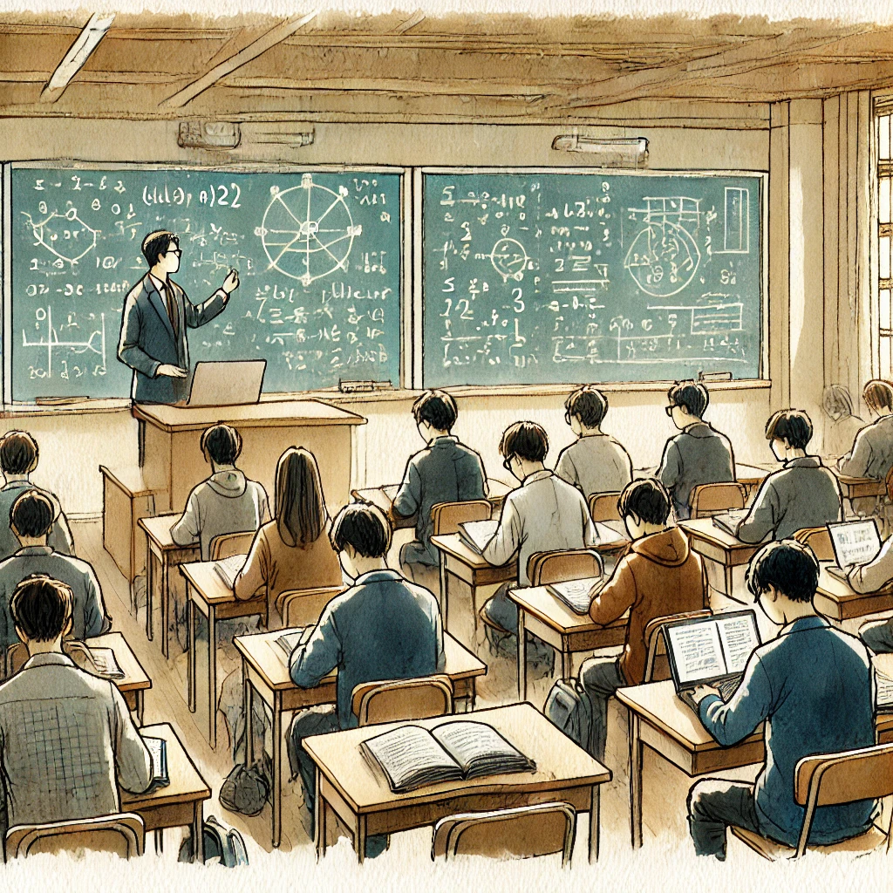
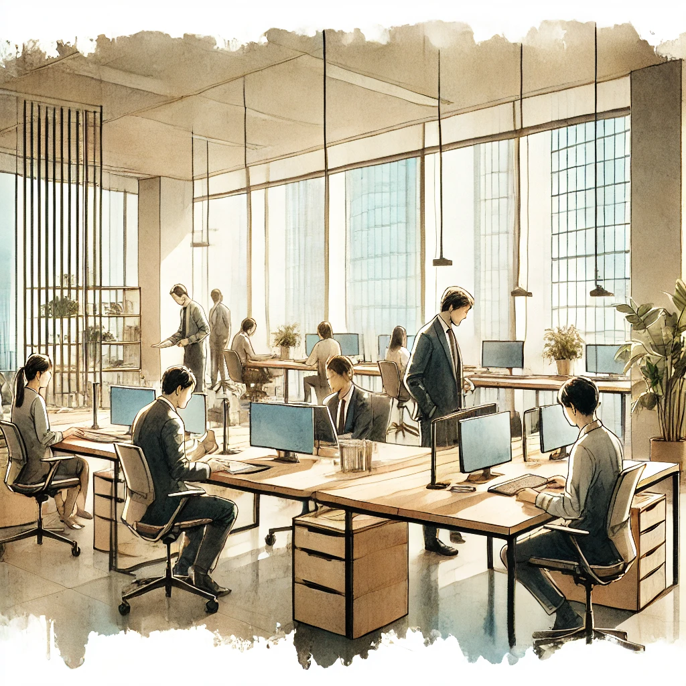

Nicolas-Georges Willems
Bonjour, je m'appelle Willems Nicolas-Georges. Étudiant en développement web à la HEPL, je suis passionné par tout ce qui touche à la création numérique. À travers mes études et mes projets, j’ai appris à concevoir des sites modernes et responsives en utilisant des technologies comme HTML, CSS, et JavaScript. Toujours curieux et motivé, je cherche constamment à améliorer mes compétences et à relever de nouveaux défis.
-
Web Développer
-

Ciplet, Belgique
-
18 Aout. (âge : 31 ans)
Capacités
-
Programmation
Capacités dans plusieurs langages de programmation
-
Gestion de Base de données
La gestion des données d'un site web
-
Montage Vidéo
Expérience dans le montage vidéo et publicitaire
-
UX Designer
L'expérience utilisateur au centre des préoccupations d'un site web
Mon parcours
Après des études en sciences appliquées au secondaire, j’ai commencé une formation en soins infirmiers avant de me réorienter vers le monde du travail. J’ai travaillé six mois à la Poste, puis passé les tests d’agent de sécurité. Pendant trois ans, j’ai exercé chez Securail pour Infrabel, une expérience enrichissante qui m’a beaucoup appris. Un accident de travail m’a forcé à me réinventer, mais il m’a aussi permis d’évoluer et de tirer de précieuses leçons. Aujourd’hui, je me tourne avec passion vers le développement web, un domaine où je peux allier logique, créativité et apprentissage continu."
-
lorempcdcnozdokzodkozkdoakdqkdpa
ednzidnizndizindzid
-
lorempcdcnozdokzodkozkdoakdqkdpa

ednzidnizndizindzid -
lorempcdcnozdokzodkozkdoakdqkdpa

ednzidnizndizindzid
Mes Compétence
-

Une image qui représente du code html avec sont logo -
Une image qui represente le logo du CSS -
Description de l'image -
Description de l'image -
Description de l'image